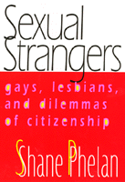

One of the field's most innovative thinkers reconsiders the status of non-heterosexuals as citizens of the U.S.
One of the field's most innovative thinkers reconsiders the status of non-heterosexuals as citizens of the U.S.


 One of the field's most innovative thinkers reconsiders the status of non-heterosexuals as citizens of the U.S.
One of the field's most innovative thinkers reconsiders the status of non-heterosexuals as citizens of the U.S.

|  |
Sexual StrangersGays, Lesbians, and Dilemmas of CitizenshipShane Phelanpaper EAN: 978-1-56639-828-2 (ISBN: 1-56639-828-2) |
"In Sexual Strangers, Shane Phelan addresses long-standing tensions between inclusion and exclusion both in queer politics and in the theory and practice of democratic citizenship. In the process, she offers a compelling case both for 'queering' citizenship and for broadening and deepening our understandings of the possibilities of a truly queer politics."
—Martha Ackelsberg, Professor of Government and Women's Studies, Smith College
Is the United States a heterosexual regime? If it is, how may we understand the political position of those who cannot or will not align themselves with heterosexuality? With these provocative questions, Shane Phelan raises the issue of whether lesbians, gays, bisexuals, and transgendered people can be seen as citizens at all. Can citizenship be made queer? Or does citizenship require the exclusion of those who are regarded as queer to preserve the "equality" that it promises?
In Sexual Strangers, Shane Phelan argues that, in the United States, queers are strangers—not exactly the enemy, since they are not excluded from all rights of citizenship, but not quite members. Rather, they are ambiguous figures who trouble the border between "us" and "them," a border just as central to liberal regimes as to other states. Life on this border structures both the exclusion of sexual minorities and their ambivalence about becoming part of the "mainstream."
Sexual Strangers addresses questions of long-standing importance to minority group politics: the meaning and terms of inclusion, respect, and resistance. Phelan looks at citizenship as including not only equal protection and equal rights to such institutions as marriage and military service, but also political and cultural visibility, as inclusion in the national imaginary. She discusses the continuing stigmatization of bisexuals and transgendered people within lesbian and gay communities as a result of the attempt to flee from strangeness, a flight that inevitably produces new strangers. Her goal is to convince students of politics, both academic and activist, to embrace the rewards of strangeness as a means of achieving inclusive citizenship, rather than a citizenship that defines itself by what it will not accept.
Excerpt available at www.temple.edu/tempress
"Shane Phelan's ambitious and highly original new book explores the tensions between citizenship and sexuality. Feminist theory has contributed significantly to the critique of the patriarchal underpinnings of conceptualizations of citizenship. Yet, Phelan rightly observes, 'the connection between heterosexism as a regime and modern citizenship is a new terrain [only] beginning to be explored.' Sexual Strangers is a landmark contribution to this emergent literature."
—Kathleen B. Jones, Professor of Women's Studies, San Diego State University
"Sexual Strangers is a powerful book that probes contradictory tendencies within the movement of queer citizens for full equality. Shane Phelan brings the work of activists and journalists into productive conjunction with democratic theory, addressing major concerns in political science, lesbian/gay/bisexual/transgendered studies, feminsim, and cultural studies."
—Morris B. Kaplan, Associate Professor of Philosophy, Purchase College, State University of New York, and author of Sexual Justice: Democratic Citizenship and the Politics of Desire
"Sexual Strangers explores what membership in the
American polity might really mean for queers. Informed by recent work in feminist theory and democratic politics, Phelan offers a clear, original, and compassionate argument that addresses issues of longstanding import to minority group politics: the meaning and terms of inclusion, respect, and resistance."
—Jodi Dean, Associate Professor, Department of Political Science, Hobart and William Smith Colleges
"Phelan's treatise is a lucid and thoughtful contribution to the literature of gay civil rights."
—Q SYNDICATE
Acknowledgments
Introduction
1. Citizens and Strangers
2. Structures of Strangeness: Bodies, Passions, and Citizenship
3. Structures of Strangeness: Citizenship and Kinship
4. Negotiating Strangeness: Assimilation and Visibility
5. Strangers among "Us": Secondary Marginalization and "LGBT" Politics
6. Queering Citizenship
Notes
Bibliography
Index
Shane Phelan is Associate Professor of Political Science at the University of New Mexico. She is the author or editor of several books on lesbian and gay politics, most recently Playing with Fire: Queer Politics, Queer Theories. She is the chair of the American Political Science Association's Committee on the Status of Lesbians and Gays in the Profession.
Gender Studies
Political Science and Public Policy
Queer Politics, Queer Theories, edited by Craig Rimmerman.
The last ten years have seen the growth of rich research in the politics of sexuality. Queer Politics, Queer Theories, edited by Craig Rimmerman, aims at developing this research both within and across disciplines. The series will focus on politics in the broadest sense: not only state- and government-oriented studies, but also community politics and the internal politics of new social movements. Such work may originate in political science, sociology, economics, American studies, philosophy, law, history, or anthropology. The series will be defined not by particular academic disciplines but by the questions raised in it. The keys are a concern for the play of power and meaning in discussions of sexuality, and/or a reading of the role of sexuality and sexual identities in conceptions of social and political studies or in our common life.
© 2015 Temple University. All Rights Reserved. This page: http://www.temple.edu/tempress/titles/1469_reg.html.